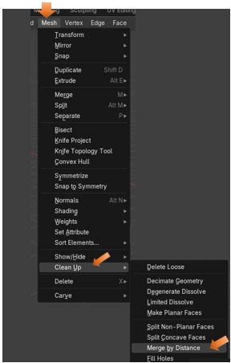

~The Rip Region Tool~
5/19/2025
Options for the Rip Region Tool
The Opposite Method to the Rip Region Tool
What is the Rip Tool?
This tool is very simple. Put simply we are grabbing some vertices and ripping them open. For example, you have a box, “rippppp…!” now you got an open box. You got a sphere “rippppp…!” now you got an open sphere. So, anything you need to open up, this is the tool for you.
What this tool is doing under the hood is to take a vertex, duplicate it, where now you are able to separate, and move those two vertices apart, creating a hole in the mesh. The icon image below sort of spells things out for you in a single image.
How to use the Rip Tool
Even though this should be a very simple, straight forward tool, right out of the gate. Like every other tool. I will time my time to demonstrate just what this tool is doing.
Take your cube, and bring it into Edit mode.
Now select the top two front vertices.
Take your Rip Region tool, no need to even bring in the Move tool on this one, it comes with the ability to move the ripped face open. So, Blender is essentially packing these two tools into one.
Just simply tug downward on this circle with your mouse, and watch your box open up. How cool is that.
Options for the Rip Region Tool
You will find one option for this rip region tool at the top of the screen, and that is to Fill it. The options in the Last Operation dialog box deal mostly with how, and what distance that you want to move the ripped opened face, after the rip portion of the procedure is completed.
When you select the check box for Fill, you will find that it will fill (close the face) instead of leaving a gaping hole. This will create new geometry here.
The Opposite Method to the Rip Region Tool
The Reverse of the Rip Region option is Merge by Distance which you can get to with the M hot key by going here in the top menu. If you move your vertices close together again after ripping, you can join them again using this method.

The Rip Edge Tool
You can get to this tool by opening up the little arrow in the bottom right-hand corner of the Rip Region tool.
Oh, boy! Did they ever mis - name this tool. That is because it should have been named the Create Vertices Tool. What this tool will do is to duplicate a vertex, and then run it along the mesh.
You start to use this tool by selecting the vertex you want to duplicate, and then pull the tool along the edge to duplicate it.
You do not need to pull this circle to move the vertex straight either. You can pull it where ever you want it to be. So, you can kind of mold this object into anything that you want, by using it.
Well, that is about it for this Rip region Tool, and for that matter the entire Tool box in Edit mode. In our next tutorial, we will begin to look at the Sub menu, under the Edit workspace’s main menu, and break that one down for you.